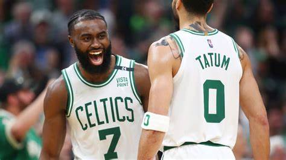

The Boston Celtics (/ˈsɛltɪks/ SEL-tiks) are an American professional basketball team based in Boston. The Celtics compete in the National Basketball Association (NBA) as a member of the league's Eastern Conference Atlantic Division. Founded in 1946 as one of the league's original eight teams, the Celtics play their home games at TD Garden, which is also the home of the National Hockey League's Boston Bruins. The Celtics are one of the most successful basketball teams in NBA history. The franchise is one of two teams with 17 NBA Championships, the other franchise being the Los Angeles Lakers. The Celtics currently hold the record for the most recorded wins of any NBA team.[11][12]
The Celtics have a notable rivalry with the Los Angeles Lakers, which was heavily highlighted throughout the 1960s and 1980s. During the two teams' many match-ups in the 1980s, the Celtics' star, Larry Bird, and the Lakers' star, Magic Johnson, had an ongoing feud. The franchise has played the Lakers a record 12 times in the NBA Finals (including recent appearances in 2008 and 2010), of which the Celtics have won nine.[13] Four Celtics players (Bob Cousy, Bill Russell, Dave Cowens and Larry Bird) have won the NBA Most Valuable Player Award for an NBA record total of 10 MVP awards.[14] Both the nickname "Celtics" and their mascot "Lucky the Leprechaun" are a nod to Boston's historically large Irish population, and also to the Original Celtics, a marquee team prior to the NBA.[15]
The Celtics' rise to dominance began in the late 1950s, after the team, led by coach Red Auerbach, acquired center Bill Russell, who would become the cornerstone of the Celtics dynasty, in a draft-day trade in 1956. Led by Russell and point guard Bob Cousy, the Celtics won their first NBA championship in 1957. Russell, along with a talented supporting cast of future Hall of Famers including John Havlicek, Tom Heinsohn, K. C. Jones, Sam Jones, Satch Sanders, and Bill Sharman, would usher the Celtics into the greatest period in franchise history, winning eight consecutive NBA championships from 1959 to 1966. After Russell retired in 1969, the team entered a period of rebuilding. In the mid-1970s, the Celtics became contenders once again, winning two championships in 1974 and 1976 under the leadership of center Dave Cowens, forward John Havlicek, and point guard Jo Jo White.
In the 1980s, the Celtics returned to dominance, as well as renewed competition with the "Showtime" Lakers, who were led by Magic Johnson and Kareem Abdul-Jabbar. Anchored by the "Big Three" of Larry Bird, Kevin McHale, and Robert Parish, the Celtics won championships in 1981, 1984, and 1986. The team defeated the Lakers in the 1984 Finals, but lost to Los Angeles in 1985 and 1987. After the departure of Parish as a free agent, the retirement of both Bird and McHale, as well as the untimely death of star player Reggie Lewis, the team struggled through the 1990s and much of the early 2000s. It was not until the Celtics assembled a new "Big Three" of Kevin Garnett, Paul Pierce, and Ray Allen that they found success once again. Under the leadership of head coach Doc Rivers, the team beat the Lakers to win a championship in 2008, but lost to Los Angeles in a seven-game series in 2010, the latest Finals matchup between the two ancient rivals.